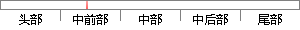

区块链是目前新兴的一种分布式存储技术，它具有去中心化、不可篡改、匿名性等优点。
片段位置图

相似结果|
相似片段 1： 区块链技术形成存储的数据具有不可篡改和无法伪造的时间戳， 任何交易都有完整的证据链和可信任的追溯环节。２、 开源、 去中心的分布式结构。 区块链系统是开源、 去中心化的，建立的数据库是全球范围内
相似片段 2：：2017-09-01区块链是一种按照时间顺序，将数据块以顺序相连的方式，组合成的一种链式数据结构，并以密码学方式保证的不可篡改和不可伪造的分布式账本。去中心、匿名性和防篡改，一起构成了区块链技术的三大支柱。但这只是区块
|
※ 片段修改建议 ※
近似词参考：- 目前：今朝 现在
- 技术：手艺 技能
- 具有：具备 拥有
- 中心：中间 中央
- 不可：不成 不行 弗成
- 篡改：窜改
- 优点：长处 好处
系统自动生成语句：区块链是今朝新兴的一种分布式存储手艺，它具备去中间化、不成窜改、匿名性等长处。
注：本片段修改建议为系统自动生成，仅供参考。